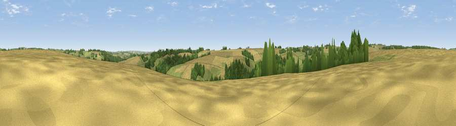

Viewpoint near Guiting Power
#36973 in England · top 76% of its area beats it · near Guiting PowerThe view, rendered

A 360° render of this exact spot computed from the terrain model, tree cover and land cover — summer colours, afternoon light, calibrated against photographs of famous viewpoints. Real trees, hedges and buildings will differ in detail.
The panorama
Grey silhouette: terrain skyline in each direction (720 bearings, Earth curvature and refraction included). Dashed green: skyline with trees (+15 m) and buildings (+8 m) as obstacles. Blue strip: how far the ground is visible on each bearing.
Where the view opens
Wedge length = distance to the farthest visible ground on that bearing (vegetation-aware). Rings at 10, 25 and 50 km.
What fills the view
44% grassland · 33% cropland · 22% woodland
Angular shares of the visible panorama (visual magnitude), not map area. Landscape diversity 0.47 (0–1 Shannon).
Key numbers
More beautiful places nearby
The staircase of upgrades: each row has a higher view potential than everything closer. Driving times are estimates from straight-line distance, calibrated against real road routing — check an actual route before setting out.
| Place | Direction | Drive | Score |
|---|---|---|---|
| Viewpoint near Guiting Power | SE · 1 km | ~4 min | 40.2 |
| Viewpoint near Hawling | W · 3 km | ~7 min | 45.7 |
| Roel Hill | WNW · 3 km | ~8 min | 67.6 |
| Viewpoint near Sudeley | NW · 5 km | ~11 min | 68.8 |
| Viewpoint near Charlton Abbots | W · 6 km | ~13 min | 70.2 |
| Salter's Hill | NW · 6 km | ~13 min | 72.3 |
| Viewpoint near Prestbury | W · 9 km | ~18 min | 73.0 |
| Viewpoint near Cleeve Hill | W · 9 km | ~18 min | 74.9 |
51.91290, -1.88038 · source: screening · position refined by local search. Computed location — check access rights before visiting.